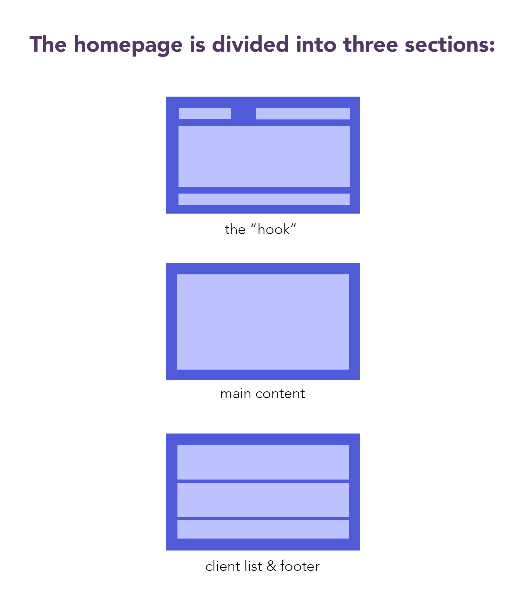

Website Experience Research
Creating an Impactful First Impression
Overview
As a research and analyst intern for Paradoxes, a market research company, I researched ways to create an engaging, frictionless website experience for a new client.
Context
4-week project during a summer 2019 internship
Team of 2 with a mentor
Role
UX researcher
Background
Founded in 2007, Paradoxes helps business and tech companies make data-driven sales, marketing, and product decisions. It prides itself on delivering quick, credible recommendations. Although the company developed strong relationships with its clients over the years, it struggled to expand its network as most people heard of Paradoxes through word of mouth.
Our research question
How can Paradoxes create an engaging, frictionless experience that will capture a potential client’s attention?
Our research and its implications
Research breakdown
+ Journey Map
The website’s intended audience were employees in associate-level positions looking for a new market research consulting agency. I interviewed 4 external associate-level employees and asked about their business-to-business interactions (B2B). I identified our user’s goals, attitudes, and emotions when approaching a new company.
Users search through a company website for its product or service description and its price. However, these three pain points are a hindrance:
- limited time - the user has multiple projects to tackle
- confusing navigation - vague wording and complex website layout contribute to disorientation
- questionable credibility - the user wants to collaborate with a trustworthy company with a history of impactful projects
We created a diagram to visualize these pain points.

We concluded that searching through a website is a necessary component of company research, yet cumbersome and frustrating.
Competitive analysis

We analyzed 24 competitors and segmented them by similar size, audiences and services, and proximity to Seattle. The goal was to identify website layouts and features that addressed the pain points above.
Finding #1: Distinctive website layout. Distinctive website layout. Companies similar in size (i.e. Audienz, Mozaic Group, and Prime8 Consulting) direct the user to its hook, the main content, then the client list and a footer. The hook has a mission statement, a striking picture, and a navigation bar. The user scrolls down to a list of solutions and clients. While traditional, the website layout is familiar and optimized for a busy employee.
Finding #2: Responsive design. Responsive design is an approach to create websites that resize according to the device screen size and orientation. An automatic resize is uncomplicated for the user and creates consistency regardless of the device.
Finding #3: Common features. Competitors showcased a list of awards, clients, contact and feedback form, and a social media presence. These website features addressed credibility issues.
The final product
Paradoxes Redesign
Once my teammate and I presented our project to the CEO, COO, and Sr. Marketing Strategist, we handed it over to an external design team. They integrated our research and redesigned the website. The new web design integrated our three findings from the competitive analysis.
What I've learned and moving forward
Reflections
In one month, I learned how to set project milestones and a final deadline. I am more familiar with my pace of work and how I work in a business setting, which was less structured than an academic one. I learned to value the data collection stage, as I found myself referring to it instead of drawing assumptions from my beliefs.
If I were to repeat this project, I would advocate for the human-centred design process. The web design changed two weeks into the research phase. Also, the four interviewees were users within my personal circle because of a 4-week timeframe and not having a budget. While the findings are a reflection of real users, it may be biased since I am familiar with them.